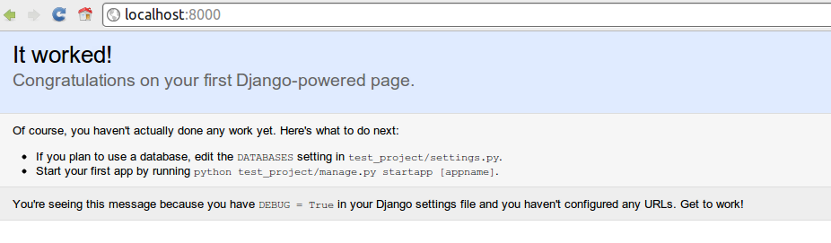

Arrancamos
nahuel.defosse@gmail.com @d3f0
diegomvh@gmail.com @diegomvh
6 clases teórico-prácticas de 2:30hs cada clase.
An interactive, object-oriented, extensible programming language
Los bloques de código están definidos mediante la indentación. No se usan las { ... }.
1 class Django(object):
2 def do_my_webapp(self):
3 print("develop, develop, develop")
4
5 if __name__ == "__main__":
6 dj = Django()
7 dj.do_my_webapp()
1 # Cadenas
2 ref = "nombre"
3
4 # Numeros
5 num = 1
6
7 # Tuplas
8 ( 1, 2, ref )
9
10 # Listas
11 [ num, 2, "edad", True, False ]
12
13 # Diccionarios
14 { "nombre": "Pepe", "edad": 28 }
The Web framework for perfectionists with deadlines
1 django-admin.py startproject mysite
1 mysite/
2 manage.py
3 mysite/
4 __init__.py
5 settings.py
6 urls.py
7 wsgi.py
1 python manage.py runserver

| Table of Contents | t |
|---|---|
| Exposé | ESC |
| Full screen slides | e |
| Presenter View | p |
| Source Files | s |
| Slide Numbers | n |
| Toggle screen blanking | b |
| Show/hide slide context | c |
| Notes | 2 |
| Help | h |